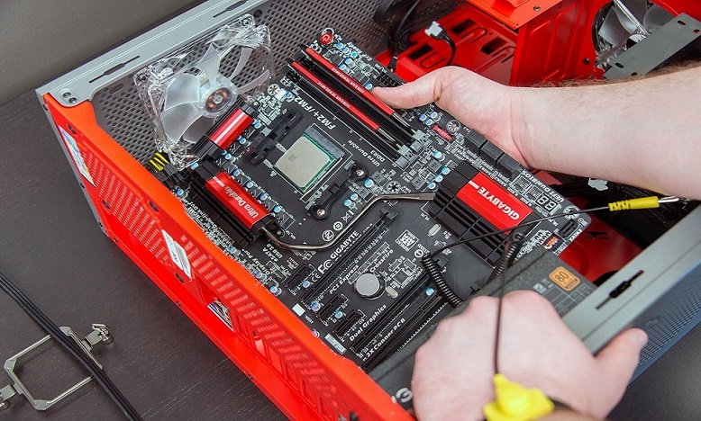

HI GUYS IM ELSON DELOSO JR.
I live in Dungon B. Jaro, And i love computer because it helps me connect with my friends and relatives who are thousand miles away. And anything or everything you want to know under the sun can be found through the aid of computer. I can also meet new friends anywhere in the world and just a click away. Very helpful and very useful. and i alson love playing video games on it. And thats the reason why i choose ICT as my strand in SHS at Colegio de San Jose.
today im gonna show you how to assemble a computer step by step üòä
Next
STEP 1 OPEN THE CASE
Computer cases are produced in a variety of form factors. Form factors refer to the size and shape of the case. Prepare the workspace before opening the computer case. There should be adequate lighting, good ventilation, and a comfortable room temperature. The workbench or table should be accessible from all sides. Avoid cluttering the surface of the workbench or table with tools and computer components. An antistatic mat on the table will help prevent physical and electrostatic discharge (ESD) damage to equipment. Small containers can be used to hold small screws and other parts as they are being removed.
There are different methods for opening cases. To learn how to open a particular computer case, consult the user manual or the manufacturer’s website. Most computer cases are opened in one of the following ways:
■ The computer case cover can be removed as one piece.
■ The top and side panels of the case can be removed.
■ The top of the case may need to be removed before the side panels can be removed.
■ Tool-less entries allow technicians to enter a case without the use of tools.
Next
Step 2 installing Power Supply
Install the Power Supply A technician may be required to replace or install a power supply, as shown in Figure 3-1. Most power supplies can fit into the computer case in only one way. There are usually three or four screws that attach the power supply to the case. Power supplies have fans that can vibrate and loosen screws that are not secured. When installing a power supply, make sure that all of the screws are used and that they are properly tightened.
These are the power supply installation steps:
Step 1. Insert the power supply into the case.
Step 2. Align the holes in the power supply with the holes in the case.
Step 3. Secure the power supply to the case using the proper screws.
Next
Step 3 Attach the Components to the Motherboard and Install the Motherboard
Attach the Components to the Motherboard and Install the Motherboard This section details the steps to install components on the motherboard and then install the motherboard into the computer case.
After completing this section, you will meet these objectives:
■ Install a CPU and a heat sink/fan assembly.
■ Install the RAM.
■ Install the motherboard.

Next
Step 4 Reattach the Side Panels and Connect External Cables to the Computer
Reattach the Side Panels and Connect External Cables to the Computer Now that all the internal components have been installed and connected to the motherboard and power supply, you need to reattach the side panels to the computer case. The next step is to connect the cables for all computer peripherals and the power cable. After completing this section, you will meet these objectives:
■ Reattach the side panels to the case.
■ Connect external cables to the computer.
Reattach the Side Panels to the Case Most computer cases have two panels, one on each side. Some computer cases have one three-sided cover that slides down over the case frame. When the cover is in place, make sure that it is secured at all screw locations. Some computer cases use screws that are inserted with a screwdriver. Other cases have knob-type screws that can be tightened by hand. Tool-less cases simply “click” closed. If you are unsure about how to remove or replace the computer case, refer to the documentation or website of the manufacturer for more information.
 Next
Next
Boot the Computer for the First Time
Boot the Computer for the First Time When the computer is booted, the basic input/output system (BIOS) performs a check on all of the internal components, as shown in Figure 3-10. This check is called a power-on self test (POST).
After completing this section, you will meet these objectives:
■ Identify beep codes.
■ Describe BIOS setup.
Beep Code Meaning Cause
1 beep Passed POST Successfully passed POST
2 beeps Memory parity error Bad memory
3 beeps Base 64K memory failure Bad memory
4 beeps Timer not operational Bad motherboard
5 beeps Processor error Bad processor
6 beeps 8042 gate A20 failure Bad CPU or motherboard
7 beeps Processor exception Bad processor
8 beeps Video memory error Bad video card or memory
9 beeps ROM checksum error Bad BIOS
10 beeps CMOS checksum error Bad motherboard
11 beeps Cache memory bad Bad CPU or motherboard